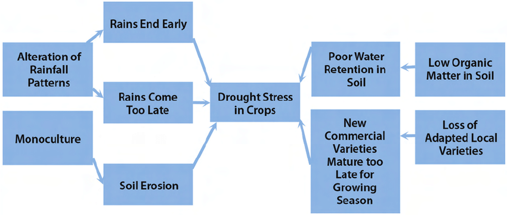

CAUSES
Land and water temperature: As the global temperature increase, more water evaporates causing a decrease in water level
Air circulation and Weather Patterns: If rainfall is not consistent, plants and animals must gain a new source of water causing lakes and puddles to dry up
Demand for water: Increase of demand for water causes the need for water more. This leads to the decrease in amount of water
EFFECTS
From plants to people, everyone is affected by this drought. Plants do not receive water and begin to dry out and wilt. Animals die because of thirst. Their homes are either barren or tarnished because of fires. And humans are affected because plants and animals die out. Our food source dry out leading us to also die.
